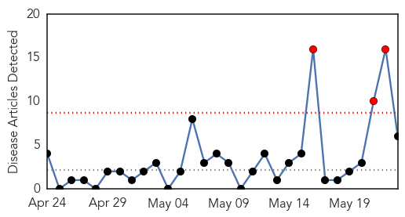
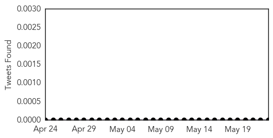
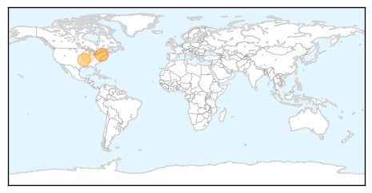
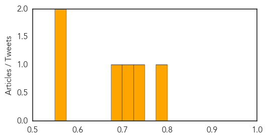

Cholera
30-Day Web Trend
3 alerts, 2 warnings

30-Day Twitter Trend
3 alerts, 0 warnings

Article Locations

Article Confidences

Top Articles:
- 0.999
- The most from the coast
- 0.999
- South Sudan: MSF rapidly scales up response to contain cholera outbreak
- 0.998
- UNICEF warns of worsening South Sudan cholera outbreak
- 0.997
- MSF rapidly scales up response to contain cholera outbreak - South Sudan
- 0.928
- UNICEF South Sudan Humanitarian Situation Report #23, Reporting Period 20 – 27 May 2014 - South Sudan
- 0.903
- Diarrhoea Hits Harare Suburbs - Zimbabwe
- 0.880
- Ireland to donate further €2m to South Sudan
- 0.574
- 2013 Mary Rines Thompson Award Winner
- 0.510
- Abyei’s Agok hospital runs out of medicines
Top Tweets:
-
No tweets found for May 23, 2014
Hepatitis
30-Day Web Trend
3 alerts, 0 warnings

30-Day Twitter Trend
0 alerts, 0 warnings

Article Locations
Article Confidences
Top Articles:
- 0.781
- Mandatory hepatitis A shots unlikely for food industry
- 0.745
- Sick Red Robin Worker May Have Exposed As Many As 5,000 People To Hepatitis A
- 0.715
- World Health Assembly approves resolution on hepatitis and mechanism to coordinate noncommunicable disease response
- 0.698
- Pancreatic, liver disease shift up on risk list
- 0.573
- Hepatitis A scare at Missouri Red Robin
- 0.560
- More than 2,000 Get Hep-A Vaccine - Story
Top Tweets:
-
No tweets found for May 23, 2014